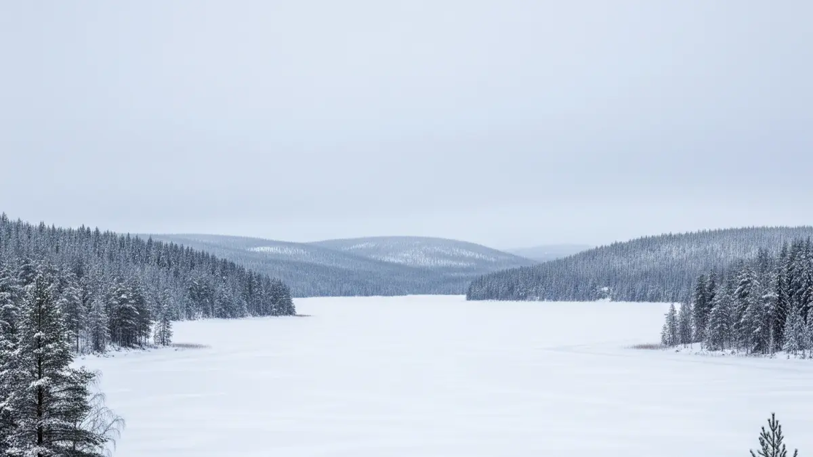

I nordiska sjöar, tjärnar och älvar förändras allt under isen: ljuset dämpas, temperaturen sjunker, och fiskarna förlitar sig mer på sina instinkter än på synen. Baserat på vetenskapliga insikter och praktiska erfarenheter ska vi dyka ner i hur du maximerar dina chanser att landa röding, abborre, gädda, harr, öring, regnbåge eller lax. Vi utforskar skillnaderna från sommarfisket, vädrets roll, betestips och strategisk positionering. Låt oss sparka igång för att inte dra ut på vår dyrbara tid.
Vinterfiske i Nordiska Vattendrag - Tips för ett lyckosamt fiske
Hur Skiljer Sig Vinterfiske från Andra Årstider?
Vinterfisket i nordiska vattendrag är en helt annan värld jämfört med öppet vatten under sommaren eller hösten. Isen och snön skapar en mörk, kall miljö som påverkar fiskens beteende djupt. Ljuset som når vattnet minskar dramatiskt, vilket gör att arter som abborre och gädda använder sin syn mindre och istället förlitar sig på sidolinjeorganet – fiskens inbyggda "radar" för vibrationer. I strömmande älvar, som sällan fryser helt, blir fisken slöare av kylan, men röding och harr håller sig aktiva tack vare sin anpassning till låga temperaturer.
Kallt vatten (0–4°C) sänker fiskens ämnesomsättning, vilket bidrar till att de rör sig mindre och hugger försiktigare. Röding trivs dock bra under vintern, särskilt i djupa sjöar där den jagar med hjälp av sidolinjen och sina känsliga ögon. Abborre simmar ofta runt i stimm på grunt vatten, medan gädda lurar i vikar. Öring, regnbåge och lax är ofta passiva, men kan nappa i syrerika zoner.
Is och snö blockerar också fotosyntesen, det gör att syrehalten minskar och fisken söker sig till syrerikare områden som inlopp eller grund. Luktsinnet blir nyckeln för arter som harr och röding, som lockas av doftande beten i mörkret.
Färger som rött funkar bra i sommarens klara vatten, men under isen är silver, vitt eller självlysande beten de som reflekterar det lilla ljuset bäst för fisken att notera.

Väder och Lufttryck: Dolda Faktorer som Påverkar Hugget
Även under isen spelar vädret roll, fast på ett mer subtilt sätt än vid öppet vatten. Soligt väder kan öka sikten något genom tunn is, vilket gynnar abborre och röding som använder sin svagljussyn mer. Molnigt eller snöigt väder mörklägger vattnet ytterligare, då kommer fiskens sidolinjeorgan ta över.
Lufttrycket är en game-changer: Högtryck gör öring och lax passiva, medan lågtryck ökar aktiviteten hos röding och harr, särskilt innan en storm. Snabbt sjunkande tryck stimulerar jaktinstinkten, troligtvis för att få fisken att fylla upp magen inför en turbulent period under vattnet.
Praktiska Tips: Beten, Teknik och Tider för Succé
Vinterfisket handlar om anpassning. Glöm sommarens snabba drag – här gäller precision och tålamod. Pirkar är det som gäller: Små (2–5 cm) silverfärgade eller vita modeller som Rapala Jigging Rap för abborre och röding, skapar vibrationer som triggar sidolinjeorganet. Stora pirkar (7–10 cm) som Nils Master Balance Jig passar gädda. Mormyska med mask eller maggot lockar harr och abborre via lukt ock små vibrationer.
Färger som silver och vitt reflekterar ljus, självlysande funkar i mörker, gult för grunt vatten. Lägg till doft som fiskolja för att aktivera luktsinnet. Teknik: Lyft och sänk långsamt med 1–2 sekunders pauser för att härma skadade byten.
Bästa tider: Gryning och skymning för röding, harr och abborre; dagtid för abborre på grunt. Nattfiske? Prova självlysande beten för röding i djupa sjöar.
Art-specifika tips:
- Röding: Djupt (5–10 m), självlysande pirkar med mask.
- Abborre: Grunt (<5 m), gula mormyska med maggot.
- Gädda: Nära inlopp, stora silverpirkar.
- Harr: Ytan/inlopp, små mormyska med doft.
- Öring/Regnbåge/Lax: Strömmande älvar, små pirkar i syrerika zoner.
Positionering och Platsval: Nyckeln till Aktiva Fiskar
Att välja rätt plats är som att läsa en karta över fiskens otillgängliga värld. Under vintern söker fiskarna syre, mat och skydd, så planera strategiskt. Borra flera hål (5–10 m isär) vid olika djup – börja grunt för abborre och harr, gå djupare för röding. Använd kartor eller ekolod för att hitta hålor, vass eller sjunkna strukturer.
Syrerika zoner som inlopp lockar abborre, gädda och harr, medan djupa hålor (5–15 m) är rödingens domän. I älvar: Lugna hålor för lax och öring. Säkerhet först – minst 10 cm is!
Anpassa efter tid och väder: Gryning/skymning i lågtryck för max aktivitet. Flytta mellan hål om ingen napp efter 10–15 min.
Sammanfattning: Ut och Erövra Vintern!
Vinterfisket är en magisk utmaning där kunskap om fiskens sinnen – sidolinjeorgan, lukt och svagljussyn – kan göra skillnad. Använd pirkar och mormyska i rätt färger, fiska långsamt i syrerika zoner, och utnyttja gryning, skymning eller lågtryck för bästa huggen. Röding och abborre är vinterns hjältar, medan andra arter kräver tålamod. Kom ihåg: Säkerhet först, och njut av naturens stillhet. Lycka till på isen.
Källor:
- Lennox, R. J., Cooke, S. J., et al. (2017). What makes fish vulnerable to capture by hooks? A systematic review of processes and evidence. Fisheries Research, 186, 589–604.
- Rodrigues, J. N., Ortega, J. C. G., Petsch, D. K., Padial, A. A., Moi, D. A., & Figueiredo, B. R. S. (2023). A meta-analytical review of turbidity effects on fish mobility.
- Oike, H., et al. (2007). Characterization of Ligands for Fish Taste Receptors.
- Carleton, K. L., et al. (2020). Seeing the rainbow: Light sensing in fish. Journal of Experimental Biology, 223(Suppl_1), jeb189258.